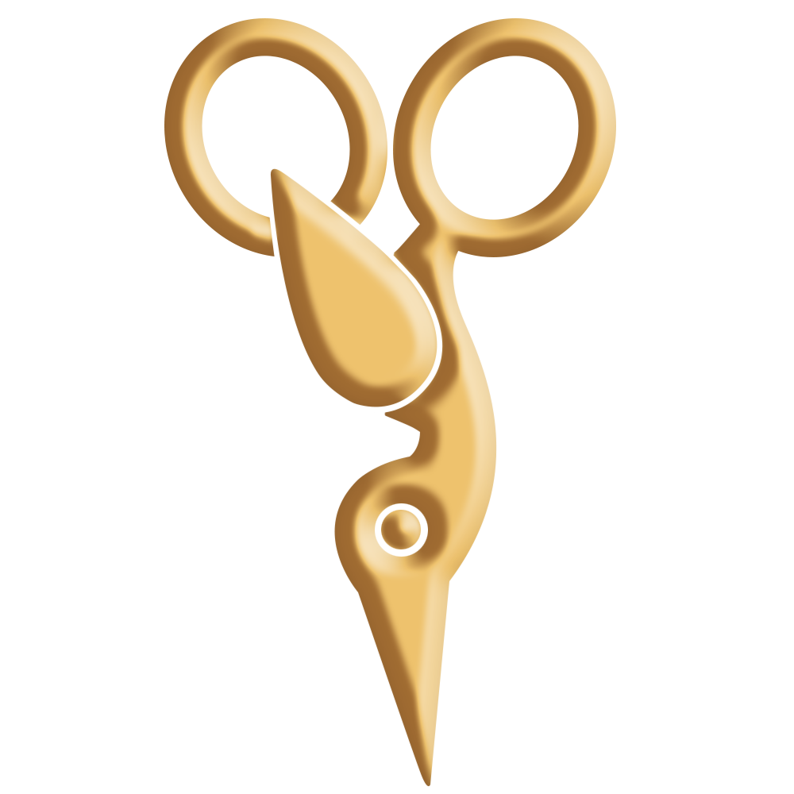
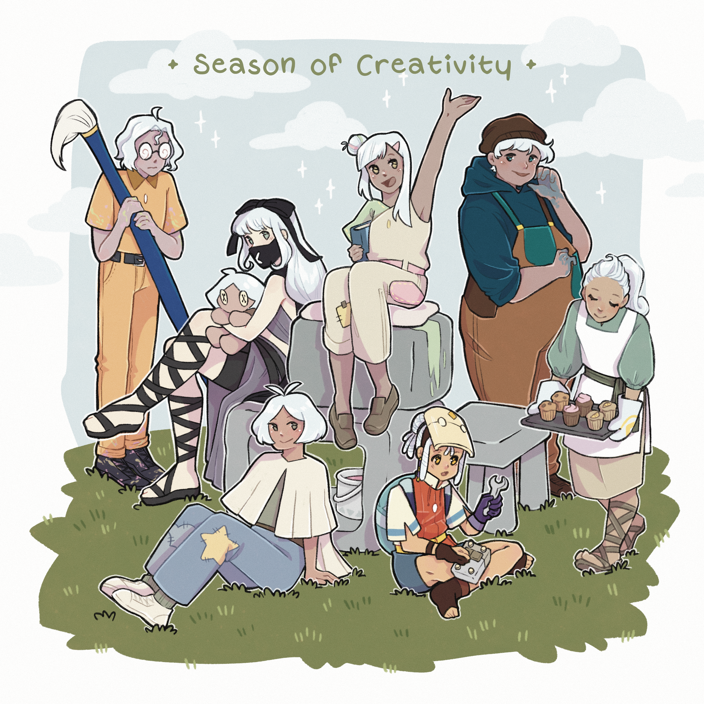
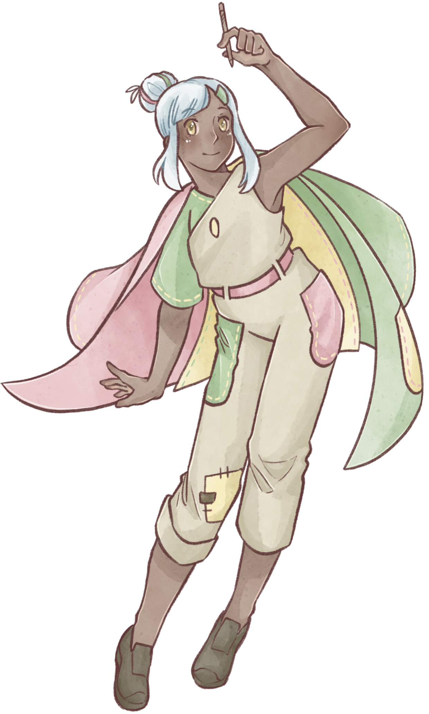
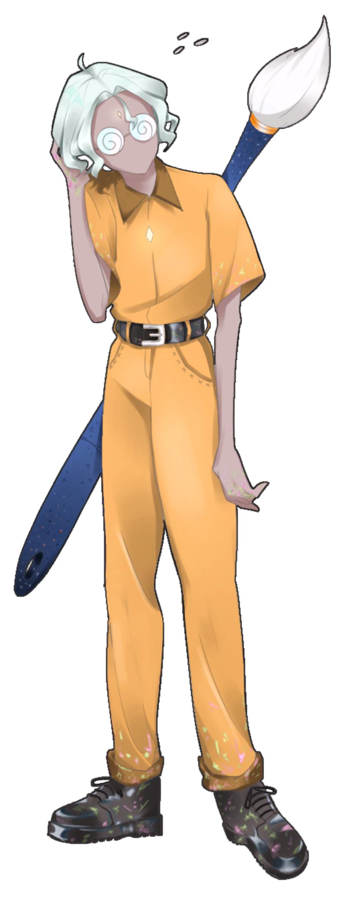
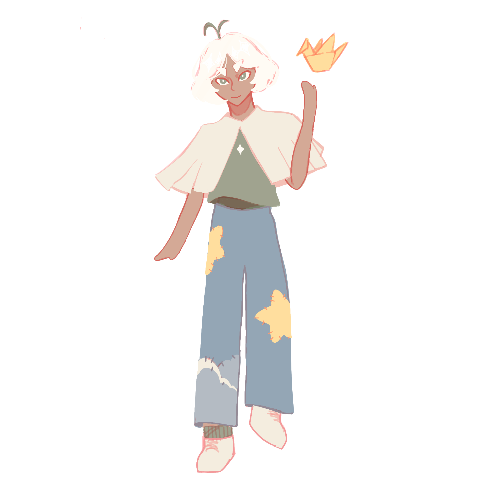
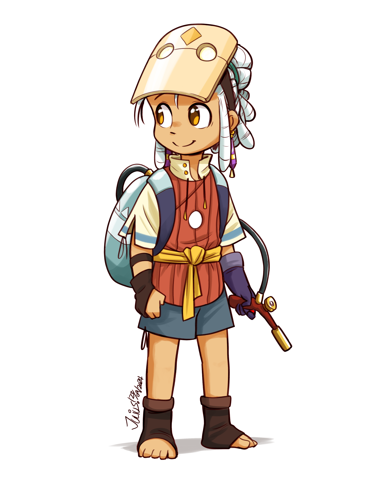
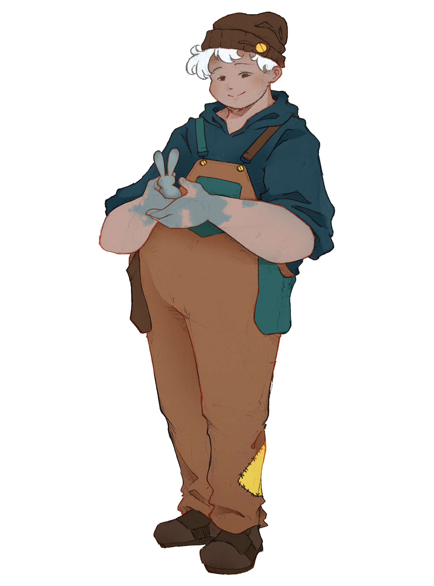
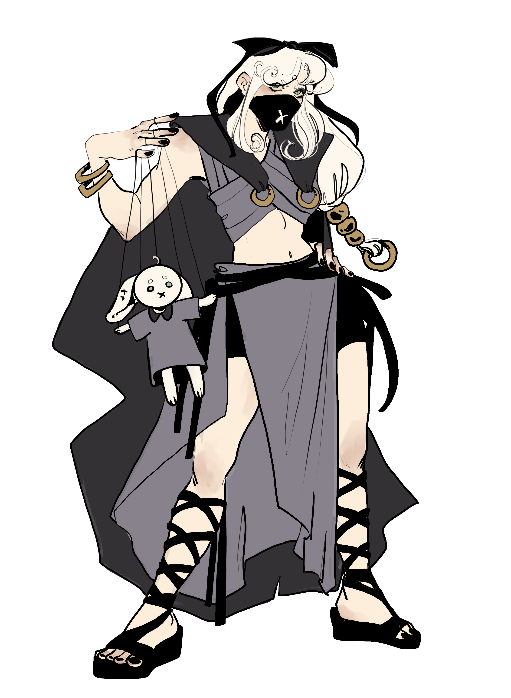
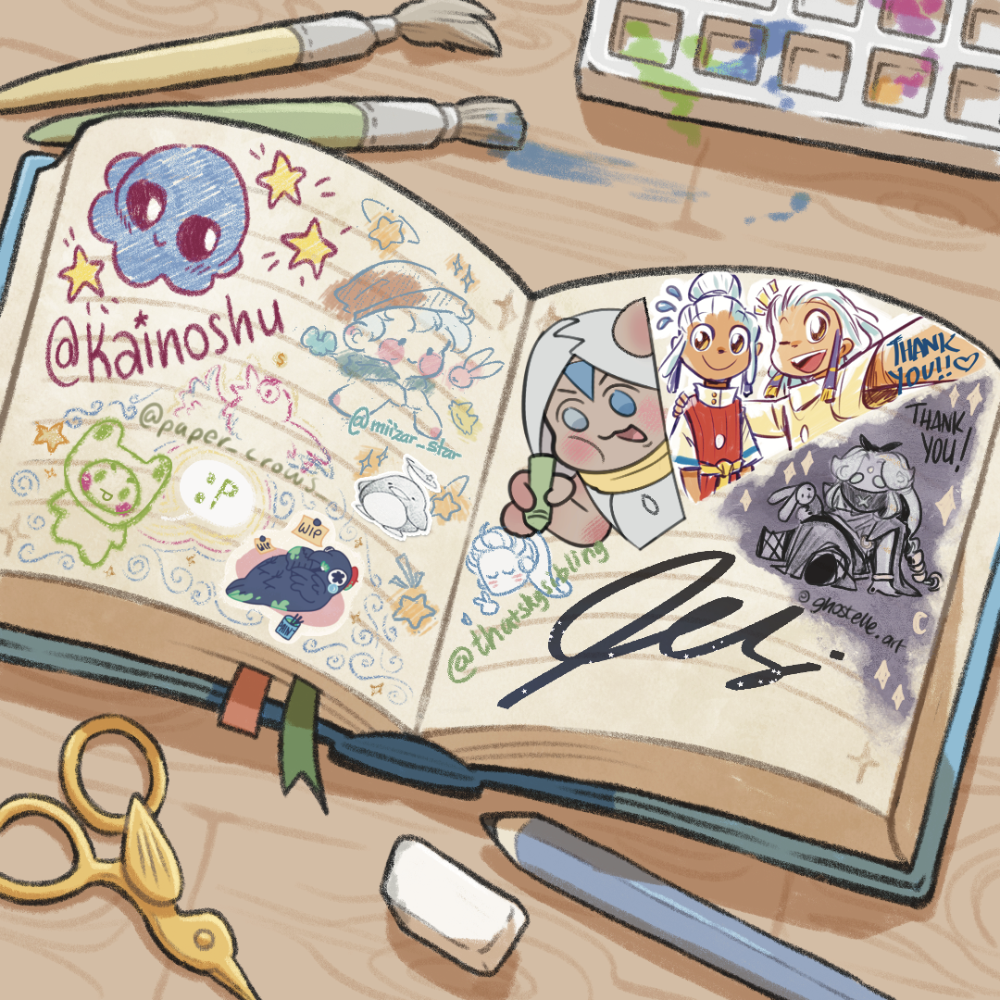

Many artists nowadays struggle to find their path, personal style, and especially the motivation to keep up with their work. Beginner artists may find themselves overwhelmed and lose their passion for art.
This Season’s purpose is to spark creativity and to challenge artists into creating art, whichever form it may be, exploring different themes and forms, getting out of their comfort zone, and focusing on what art is truly about: being themselves.
This Season quest giver represents all us artists who are still struggling, who may feel a bit lost in the sea of people and chaos, looking for something that can bring them serenity and happiness, that can help them express who they truly are.
Season of Creativity was our first big project and we are more than happy with the results.Thank you so much to all the people who joined and believed in it, we couldn't have done it without you.


Quest Giver: Wishful Artist by @kainoshu

Indecisive Painter by @pessieboi

Energetic DIYer by @paper_crows_

Aspiring Vehicle Designer by @duck_soup_pastry

Dedicated Baker by @thatskysibling

Crafty Sculptor by @miizar_star

Silent Doll-Maker by @ghostelle
We wanted to make something unique for Season of Creativity, and after a lot of brainstorming we came up with the Skills mechanic.
At the start of the Season, the quest-giver will hand each player their own Notebook, where they will be able to keep track of their Skills levels. Each Spirit from Season of Creativity will teach a different Skill and players can level them up by completing certain tasks listed on the notebook.
We believe that art would be a great attidition to the world of Sky and this is our idea of how it could work.
(more info will be posted soon!)
Project Lead: @kainoshu
Project Assistants: @paper_crows_ and @thatskysibling
Graphics and Font: @kainoshu
Skill System: @thatskysibling and @kainoshu
Additional Art and Icons: @kainoshu

Thank you to everyone who joined and to all the artists who helped with this project. Seeing everyone enjoy the season, making new friends, find inspiration and motivation: that's what I wanted Season of Creativity to be, and I think we achieved it ♥
- Kaino ✰